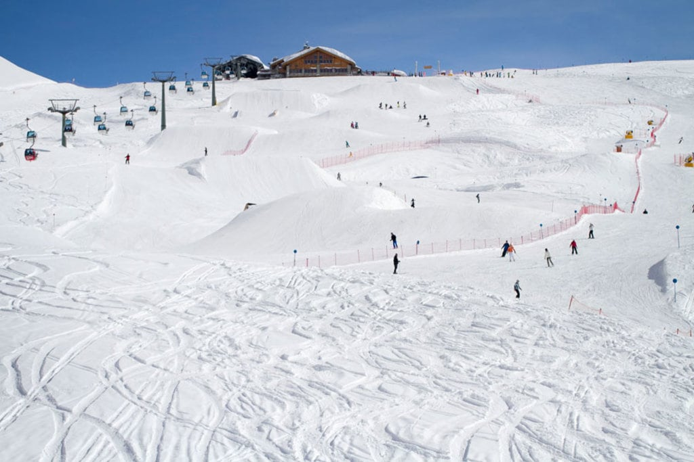
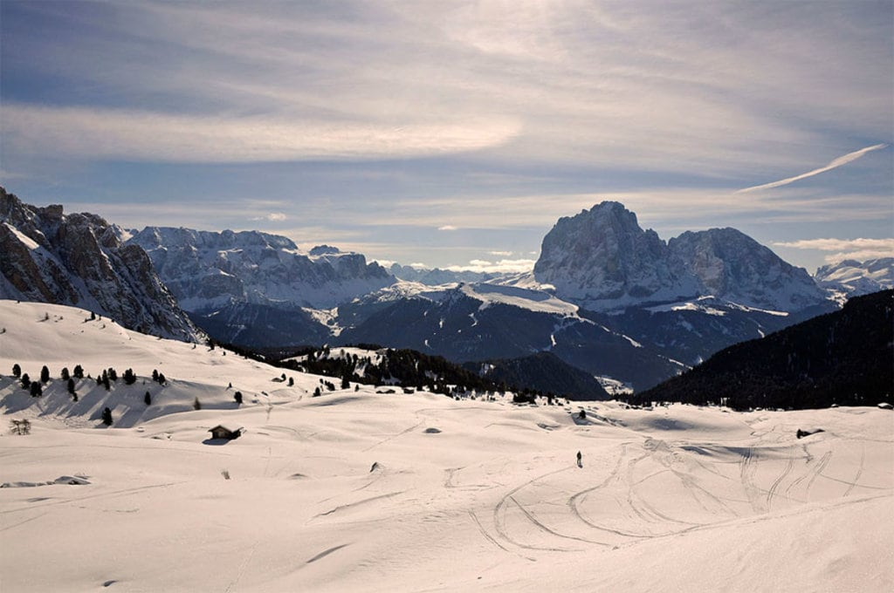
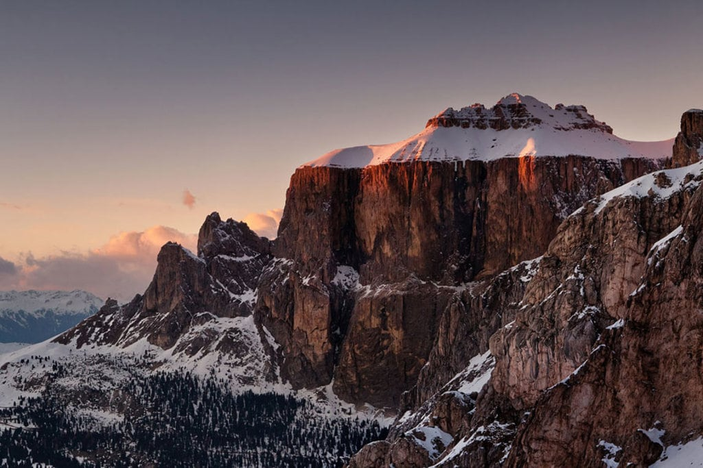

Oggi vi parlerò di come migliorare a sciare.
Iniziamo con partire a spazzaneve; arrivati alla curva, cerchiamo di unire gli sci paralleli e piegare le spalle a valle e le ginocchia a monte.
Per riuscire a migliorare ancora un po', usiamo i bastoncini e con le punte cerchiamo di di falre toccare a terra.
Consiglio caldamente di NON prendere l'occorrente a noleggio,anche perchè gli attrezzi li cambiano dopo circa 5 anni.
I migliori comprensori sciistici del Trentino sono:
- Madonna di Campiglio
- San Martino di Castrozza
- Merano
- Canazei
  